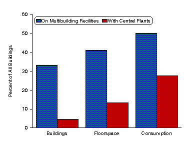

Publication - Assessment of Energy Use
in Multibuilding Facilities
Percent of Buildings, Floorspace, and Consumption
in Multibuilding
Facilities, 1989

Source: Energy Information Administration,
Office of Energy Markets and End Use, Forms EIA-871A through F of the 1989 Commercial
Buildings Energy Consumption Survey.
 To View and/or Print Reports (requires Adobe Acrobat Reader) -
Download Adobe Acrobat Reader
To View and/or Print Reports (requires Adobe Acrobat Reader) -
Download Adobe Acrobat Reader
If you experience any difficulties, visit our Technical Frequently Asked Questions.
You have the option of downloading the entire report or selected sections of
the report.
Full Report -
Assessment of Energy Use in Multibuilding Facilities (file size .53 MB)
pages: 105
Selected Sections
Main Text - (requires Adobe Acrobat Reader)
Appendices - (requires Adobe Acrobat Reader)
- Appendix A. The Facility Survey (file size 21,685
bytes) pages: 4.
- Appendix B. Data Quality (file size 76,513 bytes)
pages: 14.
- Appendix C. Estimation (file size 106,899 bytes)
pages: 8.
- Appendix D. Relative Standard Errors (file size
85,022 bytes) pages: 20.
- Appendix E. Census Regions Map (available in hard copy only*) pages: 1.
- Appendix F. Facility Form and Instructions (available in hard copy only*) pages: 7
Glossary (file size 35,863 bytes) pages: 7.
* Hardcopy information can be faxed to you by calling the National Energy Information Center
(NEIC) at (202) 586-8800 or email at infoctr@eia.doe.gov.


File Last Modified: April 9, 1997
- Contact:
- alan.swenson@eia.doe.gov
- Alan Swenson
-
- Joelle Michaels
- joelle.michaels@eia.doe.gov
- CBECS Manager
-
URL: http://www.eia.gov/consumption/commercial/data/archive/cbecs/cbecs2n.html
If you are having any technical problems with this site, please contact the EIA Webmaster at
wmaster@eia.doe.gov
|